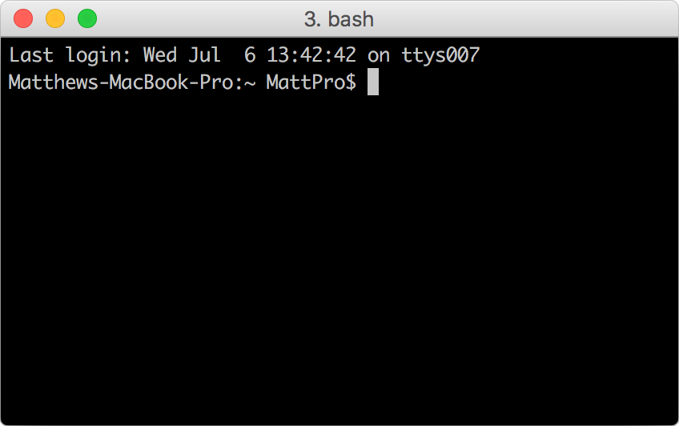
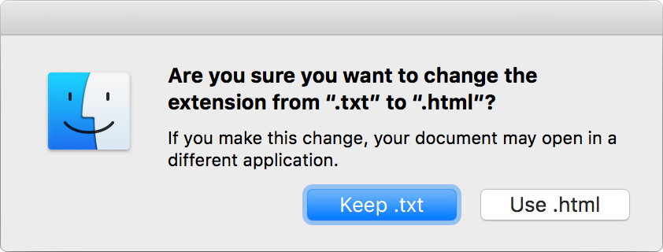

When I Sit Down At My Editor, I Feel Relaxed
Matt Huebert
DRAFT—Please do not redistribute; email me@matt.is with questions.
Last spring, I sat down to work on what I thought should be a simple computing task.Instaparse Live It took me two weeks, and I couldn't help but think: that should have taken fifteen minutes! What happened?
When I looked back, I didn't appear to have wasted time: I was learning good tools, writing in a language I enjoyed, being ostensibly sane.“We must ask, what kind of culture or subculture is the ‘well-adjusted’ person well adjusted to? Adjustment is very definitely, not necessarily synonymous with psychological health.” Abraham Maslow, Toward a Psychology of Being, 197. Yet, the incidentals outweighed the essentials. My environment of work was more often a distraction, rather than help, to the flashes of vision that would enter my mind and wish to exist. The flow between imagination and concrete representation in the world was constantly interrupted.
To understand and address this frustration, I set to work on a process of prototyping, observation, peer feedback, Jack Rusher has been a constant intellectual companion on this journey: our conversations influenced much of what I present. and research with the goal of improving what I experience when I sit down to program. In this document I share a snapshot of that work-in-progress: aspects of the prototype, key ideas I have explored and encountered, questions I ask myself, and sources I've found valuable.
A Note on Objectives
A working statement of objective might be:
To create programming environments which focus as much as possible on the essential problems at hand, and can flexibly adapt to the preferences, cognition styles and contexts of diverse people.
To understand where a good part of my motivation comes from, observe the following table: A representative sample of the kinds of problems that concern me, not the exclusive or even primary focus.
| Typical Programmer Baby Steps | |
| Open a text editor. |
Can I use Microsoft Word? Oh... what is a text editor? Which editor should I use? |
| Create and save a new file. |
Where should I put it? What should I call it? What does the 'file extension' mean? |
| Open a new terminal window. |
What is the terminal? Where do I find it? Why is it blank? What can I click? How do I know what to type? |
| Navigate to the folder where you created your file. |
What do you mean, "navigate"? How do I navigate? How do I know where I am? |
| Now, run your program: | ... (the process continues...) |
Following these steps is not easy for a beginner. Nor for an expert, if placed in an unfamiliar environment. To answer the questions on the right, one must either spend a great deal of time, or give up understanding the answers and simply tell the so-called learner (who is now well on the way to becoming an order-follower): ‘that’s just how it is, we have to keep going.’
I may now state some biases and beliefs:
- Nothing in this table is a real prerequisite to understand or explore important ideas in computer science, or to solve everyday problems with code.
- Programming environments which place fewer demands on the user are possible and inevitable, and will eventually subsume much (but not all) of programming activity. “...I had grasped the heart of the Marxian argument. It consists of a historical prophecy, combined with an implicit appeal to the following moral law: Help to bring about the inevitable!” Karl Popper, Unended Quest, 34. For many, the value of learning the incidental concerns in the above workflow will be as fleeting as the value of learning how to use DOS in 1993, or how to install device drivers in Windows 95 in its heyday. (This knowledge was invaluable at the time.)
- The intimidating nature A blank terminal window:  of incidental aspects of programming is discouraging to people who do not like to ‘think’ in the style of those we have historically accepted as ‘programmers’. An activity which is truly universal in the range of its possible forms and purposes is thereby limited to people of particular learning and motivational styles.
An ideal programming environment will continue to be a place of struggle, but more often, struggling with real problems rather than those of our own making or of our tools. Our aim is not to eliminate complexity or uncertainty, but to offer tools and perspectives that encourage us to address them calmly, “The anxiety-free person can be more bold and more courageous and can explore and theorize for the sake of knowledge itself.” Abraham Maslow, Toward a Psychology of Being, 62 with insight and clarity.
Main Aspects of the Prototype
We wish to help programmers focus on the task at hand, while flexibly adapting to diverse preferences and cognitive styles; to create an environment which is learnable and intuitive, but retains the power and flexibility of general-purpose programming. We seek techniques and interfaces that need not be abandoned as a project grows in scope and size.
It is the general-purpose nature of the goal that has led to a ‘whole-system’ approach. The prototype is a browser-based editing environment, consisting of:
- A visual tree interface to organize a project, instead of files;
- A notion of cells as the primary unit of composition, compilation, evaluation, dependency management, and revision control, running as a dataflow graph with history;
- An editor featuring movement toward flexible visual representations, in the form of ‘visual macros’ and custom formatters.
All of what is shown and most of what is discussed has been implemented in the prototype. Some aspects of the system as described remain speculative.
Instead of Files, A Tree
Most programming systems use files and folders not only to persist data, but also as an interface by which users assemble the various parts of a program into a connected whole. There are rules and constraints, which differ by programming language and system, that govern how files are to be named, where files must be located relative to one another, which files ‘must’ exist, and so on. But these rules and constraints, while absolute and strict, are invisible and unenforced from within their context of use, which is typically an operating system tool such as the Mac OS Finder or a terminal window. Mac OS displays warnings for file-system changes that may break general behaviour, but no warning will appear if a file-system change breaks programming environment expectations, of which the operating system has no knowledge. If a user treats 'programming' files like ‘normal’ files, naming and moving them for intuitive sense-making or organizational purposes, programs will break without warning. To cope effectively, a user must build and hold in mind a detailed model of the file structure expectations of the programming system at hand.
Instead of files, we use a visual tree featuring collapsible, zoomable nodes which can be either plain text, for documentation or note-taking purposes, or cells, formula-value pairs which we'll describe in detail later. We can zoom to any part of the tree, and follow a breadcrumb back to the top. Users can name and organize nodes of the tree however they like.
Interfaces of this type can remain performant and usable even as a tree grows to tens of thousands of nodes. How Big Can a Workflowy Account Get? Jesse Patel (2012).
Cells
From the dataflow model of a spreadsheet we borrow the notion of a cell as a formula-value pair. Presently, the formula (or source code) of a cell is written in ClojureScript, a Lisp dialect that compiles to JavaScript. Locally evaluated cells could be written in any language which compiles to the host language. As a user types, source code is continually compiled and evaluated, and changes propagate to dependent cells. A user can reference another cell by finding it in the autocomplete drop-down menu.
We compose programs out of cells. Each cell returns a single value, and has no knowledge of the cells which depend on it. Information should not ‘leak’ out of a cell; intercellular communication happens only via dataflow.
The cell is the unit of dependency management. We determine the dependencies of a cell by analyzing its source code, where other cells are referenced by unique ID. A cell's ID is sufficient to find and fetch it from the internet for local evaluation. Given compatible runtimes, one could copy and paste source code of cells between projects, and the runtime would load dependencies directly from the pasted code. It is trivial to display a tree of all the source code a cell depends on. To package a ‘release’ of a group of related cells, we could make a ‘namespace cell’ containing a nested map of cell references and suggested names; tests could be run on this map of cells to ensure that they work together appropriately.
We may depend on cells which are mounted and evaluated in remote environments, whose values are streamed to the local runtime. From the perspective of a cell, it does not matter where other cells ‘live’ or what language they are written in, so long as the propagated value is of the expected form.
Cells catch errors, which flow through to dependent cells so that a programmer can trace an error to its ‘root cell’ even if that cell is written in a different language or evaluated on a different machine.
Cells are persisted to a database, but could just as easily persist to files. The means of persistence is not the interface for interaction.
A cell should contain the metadata required to run itself in the host language. Given sufficient compiler and dependency-related metadata, a runtime can fetch a cell's dependencies, compile modifications to its source code, and compute new values when triggered, even if the cell is written in a language the runtime has not yet seen. No practical effort has yet been made to write cells in multiple languages; many editor-related features, described later, are language-dependent.
Dataflow, with a Twist of Reduce
To modify a cell's value in response to time or an event, we apply reducing functions, which receive a cell's current value as an argument and return the next value.
To evaluate a cell on an interval, we use the supplied interval helper function, which we pass an interval time and a reducing function:
In fact, all cells can be thought of as reducing functions, because we can use the keyword self to refer to a cell's previous value. Here we generate random numbers one-at-a-time in the first cell, and cons Adds an item to the beginning of a list. them onto self in the next cell to build a history of values:
We can use the html Expects Hiccup syntax and returns a React component which is mounted in the tree. function to visualize the values:
The with-view macro accepts an html view and a value expression. The view will be used to display the cell's value in the editing environment. Listeners passed through the html function are wrapped to behave as reducing functions. They are passed the cell's value (self) as their first argument, and the event object as the second. The return value is propagated as the cell's new self. Here is a counter:
Editor
The editor Built using CodeMirror, by Marijn Haverbeke is a bridge between the cell graph and the tree, using information from both to meaningfully represent code. Efforts are underway to introduce flexible, ad-hoc visual representation of code. The examples below are primitive but indicate possibilities.
Visual Macros
Visual macros augment ordinary Lisp code with visual representations. The idea grew out of practice, and stems from the same properties “…Syntactic macro systems work instead at the level of abstract syntax trees, and preserve the lexical structure of the original program… [Lisp-like] languages are especially suited for this style of macro due to their uniform, parenthesized syntax.” —Wikipedia of homoiconic languages (like Lisp) that make syntactic macros convenient: S-Expressions have clear boundaries, and they can be manipulated without affecting the structure of surrounding code. We can make arbitrary, ad-hoc changes to how we display parcels of code without losing the power of the language below. “LISP is a high-level language, but you can still feel the bits sliding between your toes.” Guy Steele as quoted by Daniel Hillis, Pattern on the Stone
For example, cells are referenced by unique ID, but they are visually represented by an HTML element which displays the cell's name (from the tree) and value:
A key idea behind visual macros is that one could always see the code behind the view, or disable them if desired. Rather than design a comprehensive ‘visual programming language’, we look for specific places and contexts where visual enhancement can add value, and improve experience in an ad-hoc manner.
Visual macros may be discovered which have general utility. It is my view that useful and practical visual enhancements are more likely to come ‘from the bottom’ than from a language or editor designer. This requires an iterable medium for visual representation of code which makes experimentation easy and accessible to a wide range of talents.
Visual macros are also a way to think about things we've seen before. Number scrubbers “Solve problems by interactively scrubbing over numbers until you’re happy with the results.” Bret Victor, Scrubbing Calculator are simply Lisp forms that pass a predicate (number?), replaced by HTML elements which rewrite the code they represent when dragged.
Whether we represent numbers as text or something else is a matter of taste, purpose and context. “Each notation highlights some types of information at the expense of obscuring other types; each notation facilitates some operations at the expense of making others harder. A notation is never absolutely good, therefore, but good only in relation to certain tasks.” Thomas Green (1989). Cognitive Dimensions of Notations The machinery is identical; we can represent a value however we like:
Some say that 'visual programming' has been oversold.
“Graphical, or visual, programming - the
application of computer graphics to software design….
Nothing even convincing, much less exciting, has yet
emerged from such efforts. I am persuaded that nothing will.” Fred Brooks (1987). No Silver Bullet
I think we've not yet scratched the surface. Alan Blackwell wrote that programming “involves loss of direct manipulation as a result of abstraction over time, entities or situations.”
Alan Blackwell, First Steps in Programming: A Rationale for Attention
Investment Models, 5 Unfortunately, in most cases this loss has been total. Many editors have literally no facility for adding meaning to the abstract representations of what are, fundamentally, meaning-laden entities. As a thought experiment, imagine what users would think of spreadsheets if it was impossible to format dates, numbers, and currencies.
What time of day is 1468417963?
‘Physical’ S-Expressions
We might think of code less as language, which brings to mind sentences and grammar, and more as a construction of parts, which have properties and behaviour. “The author/programmer must be able to recreate the appropriate mental chunks from a scrutiny of the code. …we are not parsing for syntactic structure but for mental structure—the reader is attempting to discover the role of each component.” Thomas Green (1989). Cognitive Dimensions of Notations
The editor allows parentheses to be dragged with the mouse, with movement restricted to valid positions. In this way the user can have a direct experience of the structure of Lisp code.
This allows us to offer benefits of structural editing, such as auto-balancing of parentheses, to beginners, without the requirement that they memorize key commands.
Direct Manipulation
We may find it useful to treat some cells more like ‘documents’ than ‘source code’, i.e., the primary interface is through direct manipulation of the view. Below, the circle function returns an HTML view which rewrites the arguments supplied to its invocation in the cell's source code:
Juxtaposing an abstract representation with a visual representation can help the user build a mental model of how they relate.
Docstrings
Documentation appears at the bottom of the screen based on cursor position in the editor. If the first form of a cell is a string, it is considered to be the ‘docstring’ for that cell.
Popouts
A user may ‘pop out’ Gmail rolls out new pop-out window for composing emails. The adoption of new ideas in popular software is both an indication and a cause of shifts in user behaviour and expectations, which we can leverage to improve our tools. a cell's source code or value to the bottom-right corner of the screen, to remain visible while working on another part of the program.
Conclusion
We have covered a number of practical efforts to reduce the incidental complexity of a programming environment, and to make the editing experience more direct, adaptive to context, and intuitive. The efforts are incomplete, but feel promising: I hope they might provoke interesting critique, debate, and further work. I would now like to conclude with a short note about why work in this field might matter.
The software that is ‘eating’ Marc Andreessen, Why Software is Eating the World our world is understood by a very small number of people. This is not part of a nefarious plan: making software today is really hard.
| Consumer Software |
| The gap between software that must be taken ‘as it is,’ versus software that ‘can become anything.’ |
| High-Level Language |
| Assembly Language |
| Machine Language |
| Hardware |
As software affects life more intensely, the payoff for having a say in the matter goes up. The opportunities for solving practical problems with code multiply. The social milieu surrounding ‘code’ and ‘programming’ thickens. We have a large and growing number of reasons why it may be valuable and important for the average person to understand what it means to code.
But ‘understanding code’ need not imply learning some reified
“The apprehension of human phenomena as if they were things, that is, in non-human or possibly superhuman terms. …as if they were something else than human products—such as facts of nature, results of cosmic laws, or manifestations of divine will.” Peter L. Berger & Thomas Luckmann, The Social Construction of Reality, 36
body of knowledge, set in stone by the tools and practices of yesterday. The message of the medium of code is flexibility. Given time and motivation, we can make a system perform as we like. It can be artistic, logical, poetic, sequential, linguistic, mechanical, musical, humourous—or whatever your mind comes up with tomorrow. That is the message I hope my work can point toward, in whatever small way it can.
“celebrate the tangible and partial.” Geoffrey Moore, Crossing the Chasm, 37
Everything depends upon the give-and-take between ourselves and our task, our work, our problems...upon feedback, which can be amplified by our criticism of what we have done. It is through the attempt to see objectively the work we have done—that is to see it critically—and to do it better, through the interaction between our actions and their objective results, that we can transcend our talents, and ourselves... Our products become largely independent of their makers. We may gain more knowledge from our children or from our theories than we ever imparted to them.
Thanks
© 2016 Matthew Huebert. Email: me@matt.is, Twitter: @mhuebert.